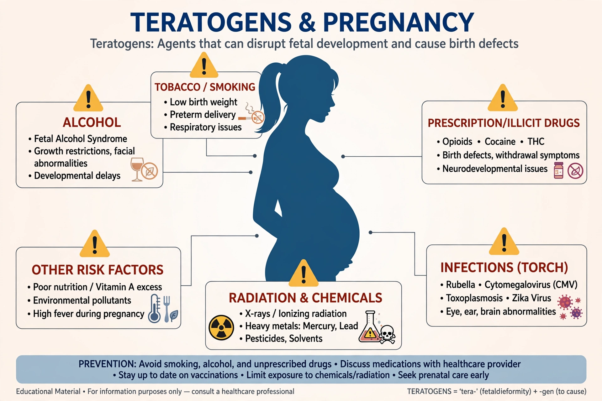

| Teratogen | |
|---|---|
 | |
| Field | Teratology, toxicology, obstetrics |
| Examples | Thalidomide, alcohol, isotretinoin, warfarin, valproic acid |
| Outcomes | Birth defects, miscarriage, growth restriction |
A teratogen is an agent or factor that causes malformation of an embryo or fetus. Teratogens may be chemical substances, drugs, infections, physical agents, or maternal conditions that act during pregnancy to disrupt normal development, particularly during organogenesis in the first trimester.
Although congenital malformations were known since antiquity, their environmental causes were long misunderstood. The rubella epidemic of 1941 led Norman Gregg to link maternal rubella to congenital cataracts. The thalidomide disaster of the late 1950s and early 1960s, in which a drug marketed for morning sickness caused limb defects (phocomelia) in thousands of infants, transformed drug regulation worldwide.
James G. Wilson formulated principles of teratogenesis: susceptibility depends on genotype, developmental timing, dose, and mechanism. The period of greatest vulnerability is typically weeks 3–8 after conception, when organs form. Exposure before implantation often has an all-or-none effect.
Examples include alcohol (fetal alcohol spectrum disorders), isotretinoin, methotrexate and other antifolates, valproic acid, warfarin, ACE inhibitors, and certain anticonvulsants. Illicit drugs and environmental chemicals such as methylmercury also act as teratogens.
The TORCH group — toxoplasmosis, other agents, rubella, cytomegalovirus, and herpes simplex — and more recently Zika virus, can cross the placenta and damage the developing brain, eyes, and heart.
Ionizing radiation, hyperthermia, uncontrolled diabetes mellitus, and phenylketonuria are established risk factors.
The former FDA pregnancy categories (A, B, C, D, X) have been replaced by narrative labeling under the Pregnancy and Lactation Labeling Rule. Prevention includes folic acid supplementation, vaccination, medication review, and avoidance of alcohol in pregnancy.